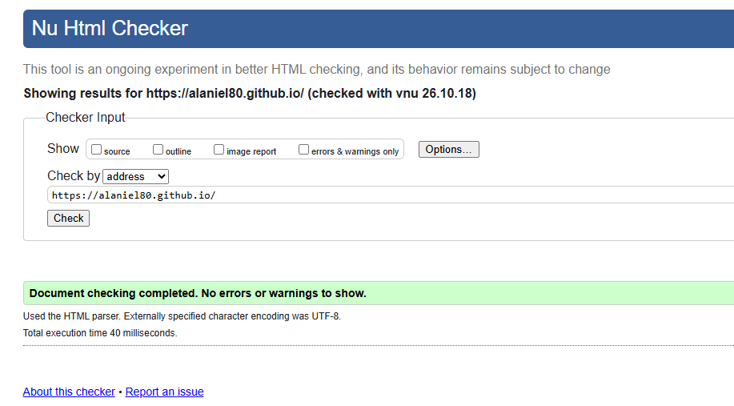

While doing the activities, I learned the basics of HTML and how to create and structure a web page using headings, paragraphs, lists, links, images, and other HTML elements. I learned the importance of good page structure, correct opening and closing tags, indentation, and validation to create a working page. This will be useful to me in my career as a data analyst, as it will help me to understand web-based information and will enable me to present my data or analysis in the form of a web page or on a web-based dashboard. Basic knowledge of HTML will also help me understand the structure of a web page and make it easier to work with other web technologies in the future.
